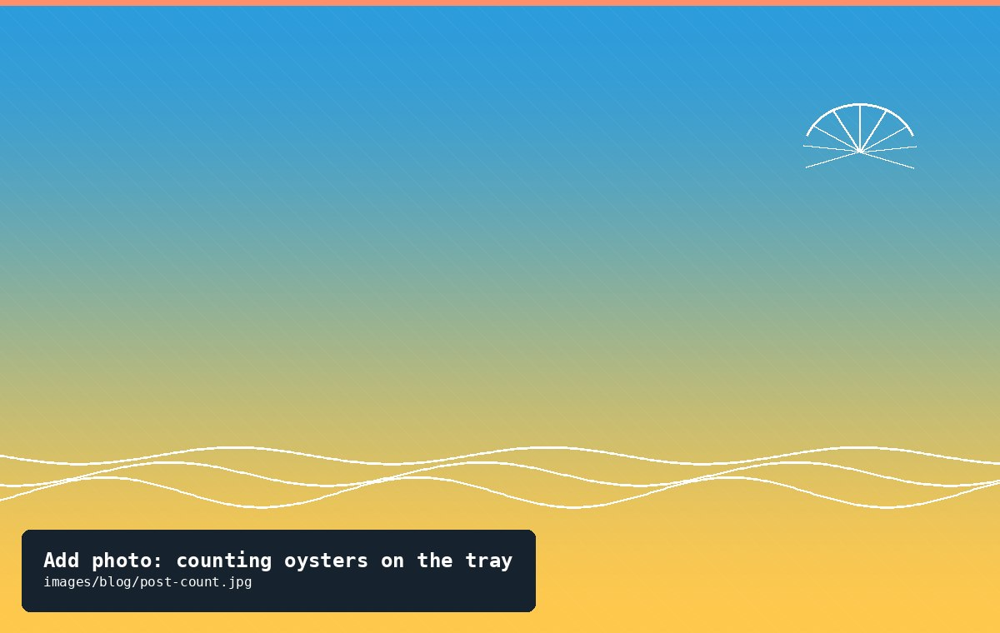
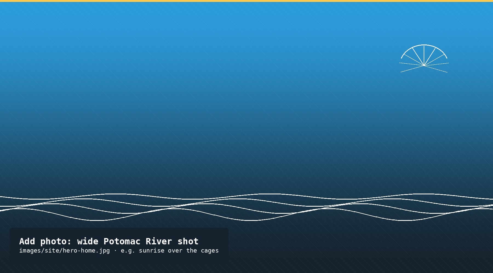
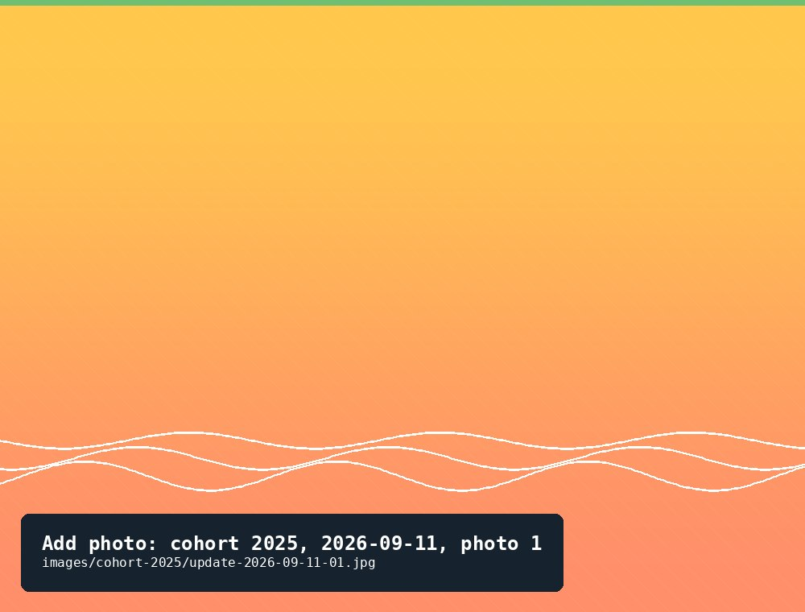

Both Cohorts
Teaching an AI to Count Oysters
One cohort's AI count matched exactly. The other's missed dozens of oysters. Here's what happened both times.
Aug 10, 20264 min read

Citizen science on tidal water
Every spring we take in a new cohort of 400 to 500 baby oysters and raise them off our dock until they're ready to go home to a Chesapeake reef. This site is the field journal — the numbers, the photos, and the occasional surprise, like a float that breaks open or an oyster that turns up a year after it was lost.
Why we garden
Oyster gardening is simple in principle: raise young oysters in a cage off a dock or pier, protected from predators, until they're big enough to survive on a restoration reef. It's slow, a little messy, and — because a single adult oyster filters roughly 50 gallons of water a day — genuinely useful to the river.
This project is a volunteer effort in partnership with the Tidewater Oyster Gardeners Association (TOGA), a nonprofit that supplies spat, coordinates cage placement, and collects gardened oysters each fall for planting on sanctuary reefs in the Chesapeake Bay watershed.
Every cohort gets its own page here, with regular measurements and photos, so you can watch each year's oysters grow from spat the size of a fingernail to something worth eating — or, more importantly, worth protecting.
One adult oyster filters about 50 gallons a day, pulling out algae and sediment.
Oyster shell and living oysters create structure for fish, crabs, and grass shrimp.
The Potomac's native reefs are a fraction of their historic size — gardened oysters help rebuild them.
Field log
Count is holding steady after an eventful summer — a broken float cost the cohort dozens of oysters in July, and seven of them turned up again in August.

The survivors of a hard winter are thriving — the largest oyster in the cohort is now within reach of typical harvest size.
From the notebook

One cohort's AI count matched exactly. The other's missed dozens of oysters. Here's what happened both times.

Seventy-eight oysters went missing in one visit — and, a month later, seven of them turned up again.

What a two-thirds overwinter loss looked like, and how the survivors have grown since.